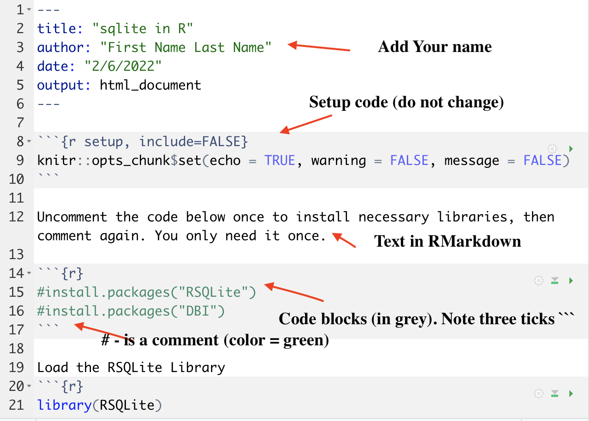
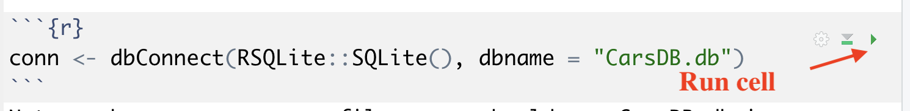
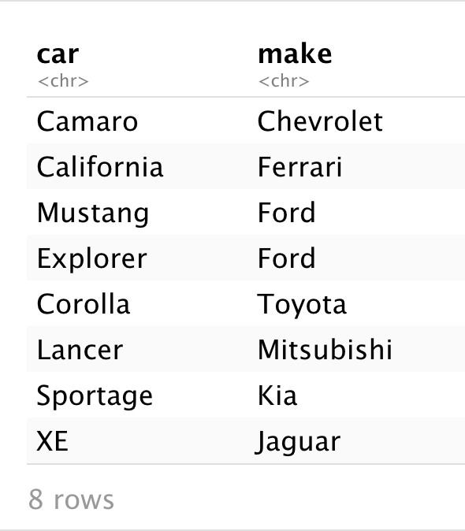

SQLite in R#
Source: [SQLite](https://db.rstudio.com/databases/sqlite/) Source: [DBI](https://dbi.r-dbi.org/) Source: [SQLITE in R](https://www.datacamp.com/community/tutorials/sqlite-in-r)See Rmarkdown in Canvas for code.
Open RStudio: File > Open File > select rsqlite.rmd

Uncomment two lines to install necessary libraries.
install.packages("RSQLite")
install.packages("DBI")
Note
The DBI package helps connecting R to database management systems (DBMS). DBI separates the connectivity to the DBMS into a “front-end” and a “back-end”.
You can run cell separately like you woulld do in python notebook 
Creating Connection and Database#
Our database will be called CarsDB.db
Recall in python you connect as follows: connection = sqlite3.connect('mydatabase.db')
Prepare data#
Load the mtcars as an R data frame put the row names as a column, and print the header.
data("mtcars")
mtcars$car_names <- rownames(mtcars)
rownames(mtcars) <- c()
head(mtcars)
Load data table to database#
We are using the dbWriteTable() function:
conn: The connection to your SQLite database
name: The name you want to use for your table
value: The data that you want to insert. It should be an R data frame.
dbWriteTable() - list of tables available in database
dbWriteTable(conn, "cars_data", mtcars)
dbListTables(conn)
Add and apend tables#
We can add another table “Cars_and_Makes”.
We can also append several dataframes to a table using append=TRUE.
Here we ar egoing to create two small dataframes and combine them in a List (dfList), then we will create a table “Cars_and_Makes” where we will append all dataframes from the list to one table using foor loop.
# Create toy data frames
car <- c('Camaro', 'California', 'Mustang', 'Explorer')
make <- c('Chevrolet','Ferrari','Ford','Ford')
df1 <- data.frame(car,make)
car <- c('Corolla', 'Lancer', 'Sportage', 'XE')
make <- c('Toyota','Mitsubishi','Kia','Jaguar')
df2 <- data.frame(car,make)
# Add them to a list
dfList <- list(df1,df2)
# Write a table by appending the data frames inside the list
for(k in 1:length(dfList)){
dbWriteTable(conn,"Cars_and_Makes", dfList[[k]], append = TRUE)
}
# List all the Tables
dbListTables(conn)
dbWriteTable(conn,"Cars_and_Makes", dfList[[k]], append = TRUE)
Now we have two tables in database: Cars_and_Makes and cars_data
Querying#
We use dbGetQuery to create queries:
conn: The connection to the SQLite Database
query: The SQL query you want to execute as a string
Query 1. Gather data from a table
dbGetQuery(conn, "SELECT * FROM Cars_and_Makes")

Note
through RSQLIte, you can execute any query that is valid for a SQLite database (Except RIGHT OUTER JOINS and FULL OUTER JOINS, which are not allowed in SQLite).
Recall in python you create cursor cursor = connection.cursor(), then execute cursor.execute("SELECT * FROM emp")
Query 2. Gather the first 10 rows in the cars_data table
dbGetQuery(conn, "SELECT * FROM cars_data LIMIT 10")
Query 3. Get the car names and horsepower of the cars with 8 cylinders
dbGetQuery(conn,"SELECT car_names, hp, cyl FROM cars_data
WHERE cyl = 8")
Query 4. Get the car names and horsepower starting with M that have 6 or 8 cylinders
dbGetQuery(conn,"SELECT car_names, hp, cyl FROM cars_data
WHERE car_names LIKE 'M%' AND cyl IN (6,8)")
Query 5. Get the average horsepower and mpg by number of cylinder groups
dbGetQuery(conn,"SELECT cyl, AVG(hp) AS 'average_hp', AVG(mpg) AS 'average_mpg' FROM cars_data
GROUP BY cyl
ORDER BY average_hp")
Storing#
Store the results of your queries as a data frame by assigning the result of your query to a variable.
avg_HpCyl <- dbGetQuery(conn,"SELECT cyl, AVG(hp) AS 'average_hp'FROM cars_data
GROUP BY cyl
ORDER BY average_hp")
avg_HpCyl
class(avg_HpCyl)
Parametrization#
One of the greatest advantages of operating with SQLite databases from R is the ability to use parameterized queries. That is, using variables available in your R workspace and adding them to query your SQLite database.
An example of the power of the intersection between R and SQLite can be seen in parameterized queries, which could be used if you need to query a database in order to display information based on user input inside an R Shiny app. Another example use case or parameterized queries could be virtual assistants or chatbots.
For example, there is some user input (e.g. from the dynamic webapp) that asks us to look only into cars that have over 18 miles per gallon (mpg):
mpg <- 18
cyl <- 6
Result <- dbGetQuery(conn, 'SELECT car_names, mpg, cyl FROM cars_data WHERE mpg >= ? AND cyl >= ?', params = c(mpg,cyl))
Result
The placeholder value in the query (>= ?) and the params argument of dbGetQuery(), which takes a list or a vector with the values for the placeholders (in this case we have a vector containing the mpg and cyl variables).
Insert / Delete#
the function dbExecute()is used for inserting, updating or deleting table records.
# Insert the data for the Mazda RX4. This will also ouput a 1
dbExecute(conn, "INSERT INTO cars_data VALUES (21.0,6,160.0,110,3.90,2.620,16.46,0,1,4,4,'Mazda RX4')")
# See that we re-introduced the Mazda RX4 succesfully at the end
dbGetQuery(conn, "SELECT * FROM cars_data")
# Delete the column belonging to the Mazda RX4. You will see a 1 as the output.
dbExecute(conn, "DELETE FROM cars_data WHERE car_names = 'Mazda RX4'")
Disconnect#
dbDisconnect(conn)
Knit your Notebook#
Once you are done and all your query chunks work properly, you can convert yoru notebook too HTML for sharing.
Note
Because you have created a real database (it is in yoru directory) and inserted tables [if you ran your code chunks one by one] - you do not want to run those lines again - it will cause an error. Add eval=FALSE in step 3 and step 4 (inside curly brackets)
{r eval=FALSE}